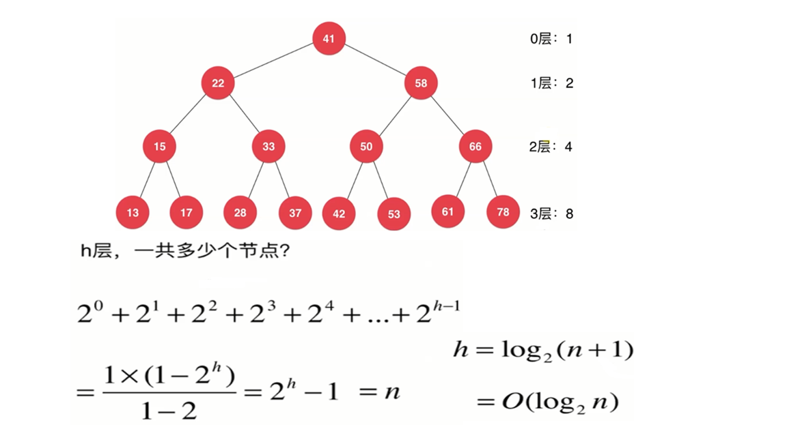

为什么要有树结构
树结构本身是一种天然的组织结构。将数据使用数结构存储后，会很高效
二叉树
特性：
- 二叉树和链表一样，是动态数据结构。
- 二叉树具有唯一根节点。每个节点最多有两个孩子，最多有一个父亲。
- 二叉树具有天然的递归结构。
满二叉树：在一棵二叉树中，如果所有分支节点都存在左子树和右子树，并且所有叶子节点都在同一层上。这样的二叉树称作满二叉树。
完全二叉树：如果一个具有n个节点的二叉树与满二叉树的前n个节点的结构相同，这样的二叉树被称为完全二叉树。
1 | class Node{ |
二分搜索树BST
特性
1）二分搜索树每个节点的值：大于左子树的所有节点的值；小于其右子树节点的值。
2）每一棵子树也是二分搜索树
3)）存储的元素必须有可比性
1 | //实现Compareble接口是为了让存储的元素具有可比性 |
添加新元素
代码讲解的是不包含重复元素和采用递归的写法。
如果想包含重复元素，只需定义左子树小于等于节点，或右子树大于等于节点。二分搜索树添加元素的非递归写法和链表很像。
思想：从根节点开始找插入的位置，满足二叉搜索树的特性，比左子节点大，比右子节点小。
步骤：
- 从根节点开始，先比较当前节点，如果当前节点为null那么很明显就应该插入到这个节点。
- 如果上面的节点不是null，那么和当前节点比较，如果小于节点就往左子树放，如果大于节点就往右子树放。
- 然后分别对左子树或者右子树递归的递归进行如上1、2步骤的操作。
1 | // 向二分搜索树中添加新的元素e |
添加元素java代码改进版：
1 | // 向二分搜索树中添加新的元素e |
查询元素
1 | // 看二分搜索树中是否包含元素e |
遍历
遍历操作就是把所有节点都访问一遍(访问的原因和业务有关)，在线性结构下，遍历是极其简单的（for循环）。
树结构的遍历操作，两棵子树都要顾及。
前序遍历：
若二叉树为空，则算法结束，否则：1）访问根节点。2）前序遍历根节点的左子树。3）前序遍历根节点的右子树。
1 | // 二分搜索树的前序遍历 |
非递归的二叉树前序遍历算法
借助栈的数据结构来实现，步骤如下：
1）把根节点入栈
2）只要栈不为空，就依次把每个节点出栈
- 若该节点的右子树非空，将该右子树的根节点入栈
- 若该节点的左子树非空，将该左子树的根节点入栈
1 | // 二分搜索树的非递归前序遍历 |
中序遍历
若二叉树为空，则算法结束，否则：1）中序遍历根节点的左子树。2）访问根节点。3）中序遍历根节点的右子树。
1 | // 二分搜索树的中序遍历 |
后序遍历
若二叉树为空，则算法结束，否则：1）后序遍历根节点的左子树。2）后序遍历根节点的右子树。3）访问根节点。
1 | // 二分搜索树的后序遍历 |
层序遍历(广度优先遍历)
利用队列的数据结构实现，步骤如下：
1）将根节点入队列
2）当队列不为空时，依次把队列中的节点出队列
- 若该节点的左子树不为空，将该左子树的根节点入队列
- 若该节点的右子树不为空，将该右子树的根节点入队列
1 | //二分搜索树的层序遍历 |
删除元素
删除最小值所在节点
思想：根据二分搜索树的特性，我们知道节点的左孩子小于该节点（依次递归，找到最小值)
1 | // 从二分搜索树中删除最小值所在节点, 返回最小值 |
删除最大值所在节点
思想：根据二分搜索树的特性，我们知道节点的右孩子大于该节点（依次递归，找到最大值)
1 | // 从二分搜索树中删除最大值所在节点 |
删除元素为e的节点
分为三种情况
1）待删除元素的节点左子树为空
2）待删除元素的节点右子树为空
3）待删除元素的节点左右子树非空情况
- 找到待删除节点的后继节点来代替
Node successor = minimum(node.right);
successor.right = removeMin(node.right);
successor.left = node.left;
node.left = node.right = null;
- 找到待删除节点的前驱节点来代替
Node precursor = maximum(node.left);
precursor.left = removeMax(node.left);
precursor.right = node.left;
node.left = node.right = null;
1 | // 从二分搜索树中删除元素为e的节点 |
二分搜索树的时间复杂度分析

添加操作：add(E e)：O(logn)
删除操作：remove(E e)：O(logn)
查询操作：contains(E e)：O(logn)
二分搜索树的顺序性
二分搜索树当做查找表的一种实现。我们使用二分搜索树的目的是通过查找 key 马上得到 value。
二分搜索树还能回答哪些问题呢？这些问题都和顺序相关。
minimum，maximum
successor，predecessor（这两个元素在二分搜索树的 key 中必须存在）
floor（地板），ceil（天花板）（这两个元素在二分搜索树的 key 中可以存在，也可以不存在）
rank（58 是排名第几的元素）、select（排名第10的元素是谁）
在有些情况下，我们须要支持重复元素的二分搜索树。
二分搜索树的局限性
二分搜索树可能会退化成链表。而通过对二分搜索树的时间复杂度分析，二分搜索树的查找过程是跟其高度有关的。
为了解决此问题，可以改造二叉树的实现，使得其无法退化成链表—–平衡二叉树，它有左右两棵子树，并且其高度差不会超过1，因此可以保证其高度一定是 logn 级别的，此概念的经典实现就是红黑树。